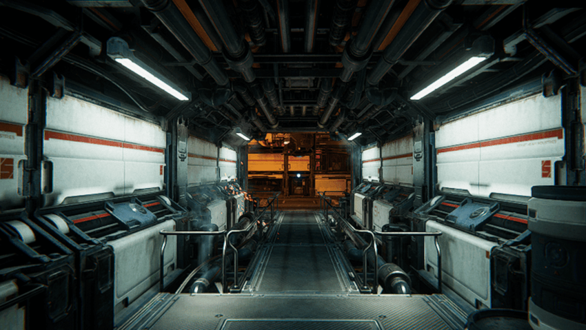
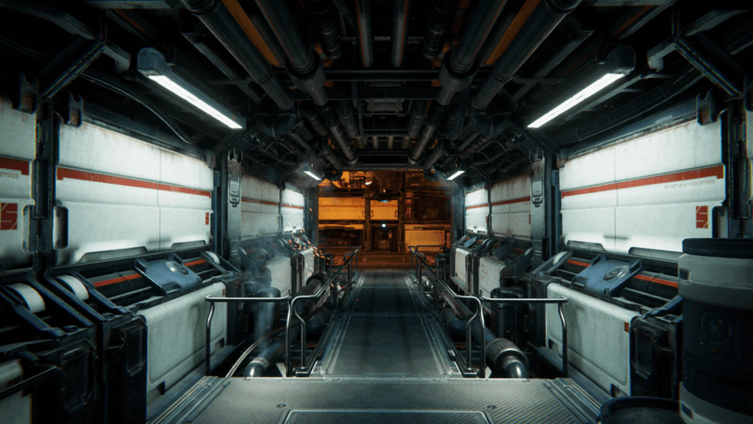

NVIDIA Deep Learning Super Sampling (DLSS) is a rendering technology that uses artificial intelligence to increase graphics performance and quality. You can use it to:
For more information about DLSS, see the NVIDIA documentation.
This section includes information about the hardware requirements and render pipelineA series of operations that take the contents of a Scene, and displays them on a screen. Unity lets you choose from pre-built render pipelines, or write your own. More info
See in Glossary compatibility of DLSS.
For information about hardware and driver requirements, see the NVIDIA documentation.
| Feature | Built-in Render Pipeline | Universal Render Pipeline (URP) | High Definition Render Pipeline (HDRP) | Scriptable Render Pipeline (SRP) |
|---|---|---|---|---|
| DLSS | No (1) | No (1) | Yes | No (1) |
Notes:
Unity supports DLSS on the following platforms:
Unity does not support DLSS for Metal, Linux, Windows using x86 architecture (Win32), or any other platform. To build your project for Windows, use x86_64 architecture (Win64).
For information about the hardware requirements of DLSS, see NVIDIA’S DLSS requirements.
For information on how to use DLSS in HDRP, see Deep learning super sampling in HDRP.

The Spaceship Demo Project rendered with a screen percentage of 50 without DLSS. The image is blurry, especially around the spark visual effect.

The Spaceship Demo Project rendered with a screen percentage of 50, but using DLSS. This image is less blurry than the previous image, especially around the spark visual effect.
The available quality modes are as follows: